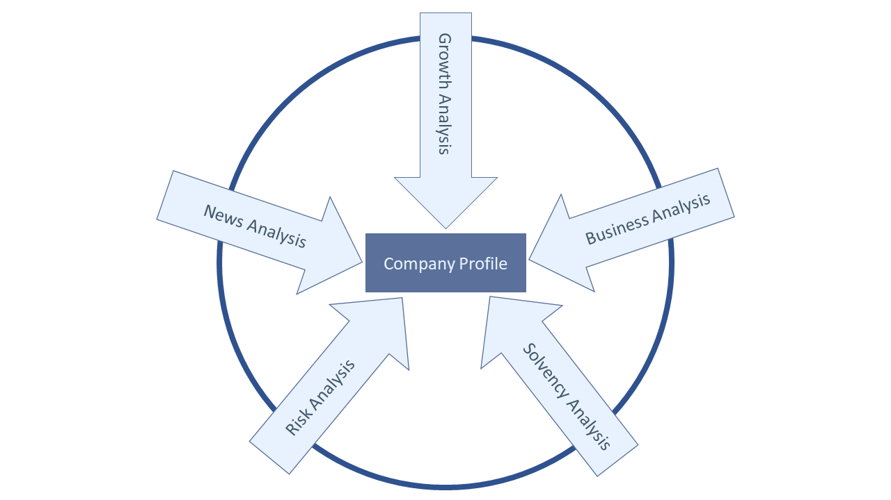
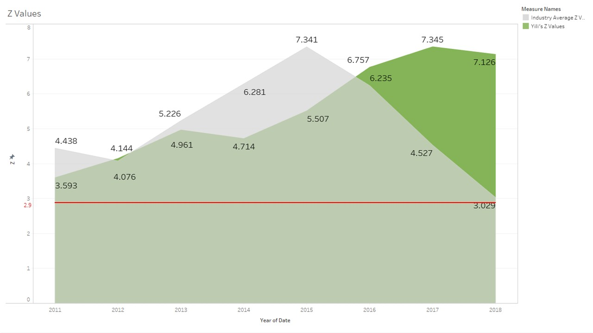

By using these 2 models as below,
you can have a big picture of this company.
Profiling
Stock Price


Easy way to start you investment!
By using these 2 models as below,
you can have a big picture of this company.
Growth Analysis
Since ROE is a major factor people used to analyze companies' growth capacities,
we here mainly execute this part based on ROE & DuPont Analysis model
According to the chart above, we can see Yili has a leading ROE for several years,
even if the whole industry is shrinking.
Business Analysis
Higher AP Turnover rate shows less days to make the payments.
Higher AR Turnover rate shows less days to receive payments
Higher Inventory Turnover rate shows less days used to sell products.
As we can see from the charts, Yili's AP Turnover rate, AR Turnover rate, and Inventory Turnover rate are all higher than the industry average,
which shows a good business status.
Solvency Analysis


Current Ratio and Debt/Assets Ratio are both used to check companies' solvency
The Higher, the better.
Risk Analysis
Here we use Z-values, which indicates if there are probabilities companies will bankrupt.
By using a series of algorithm, companies' Z-values will be calculated automatively.
The safest area is the place which Z-value is higher than 2.9.
News Analysis


What is K Line Chart?

How to read K Line Chart?
How to read Volume Chart?
How to read MACD Chart?